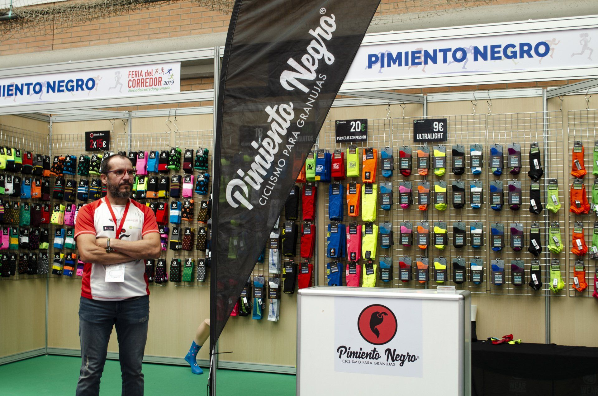
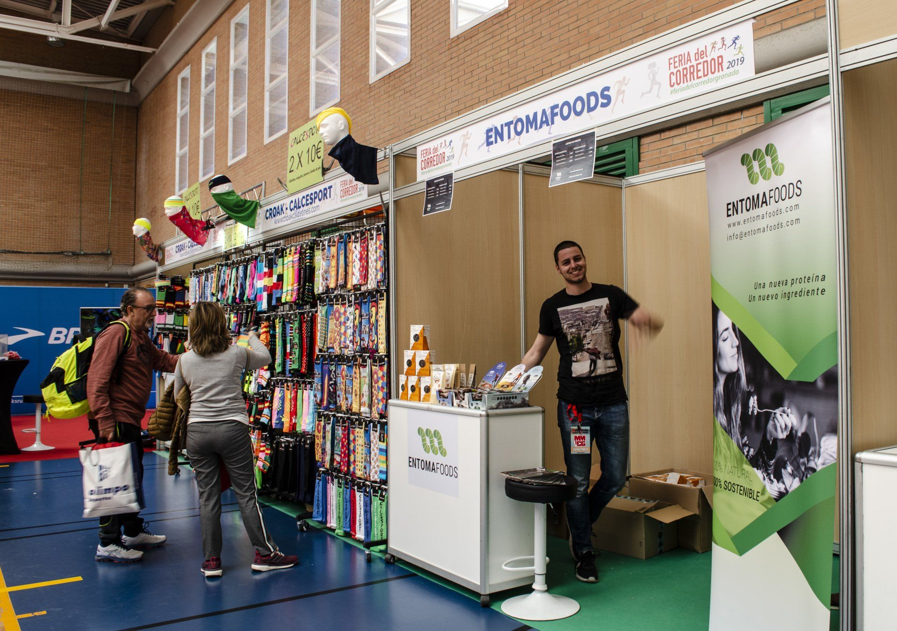
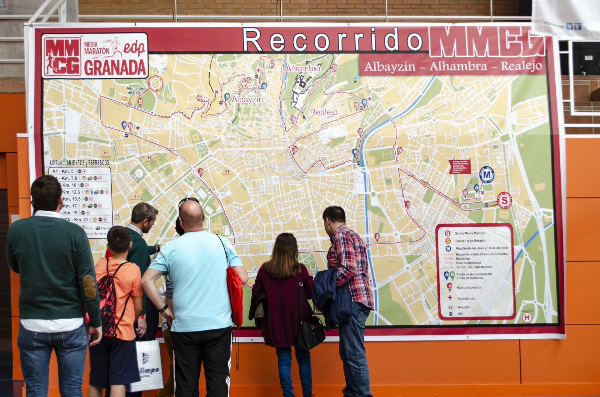
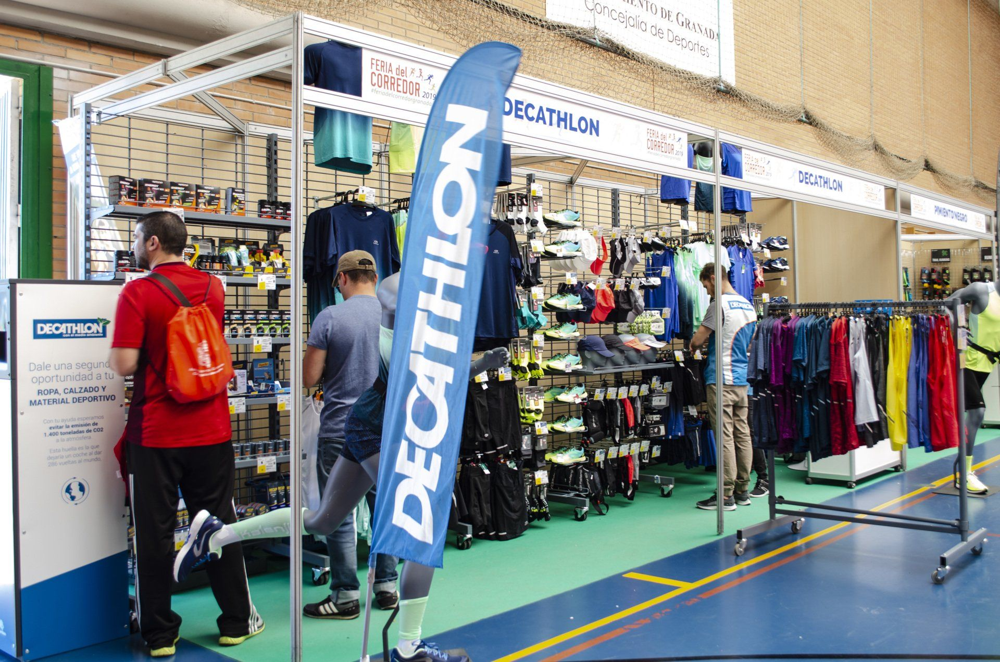
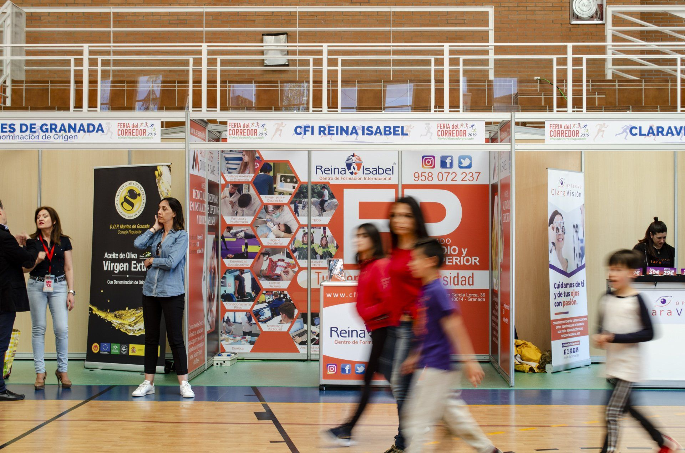
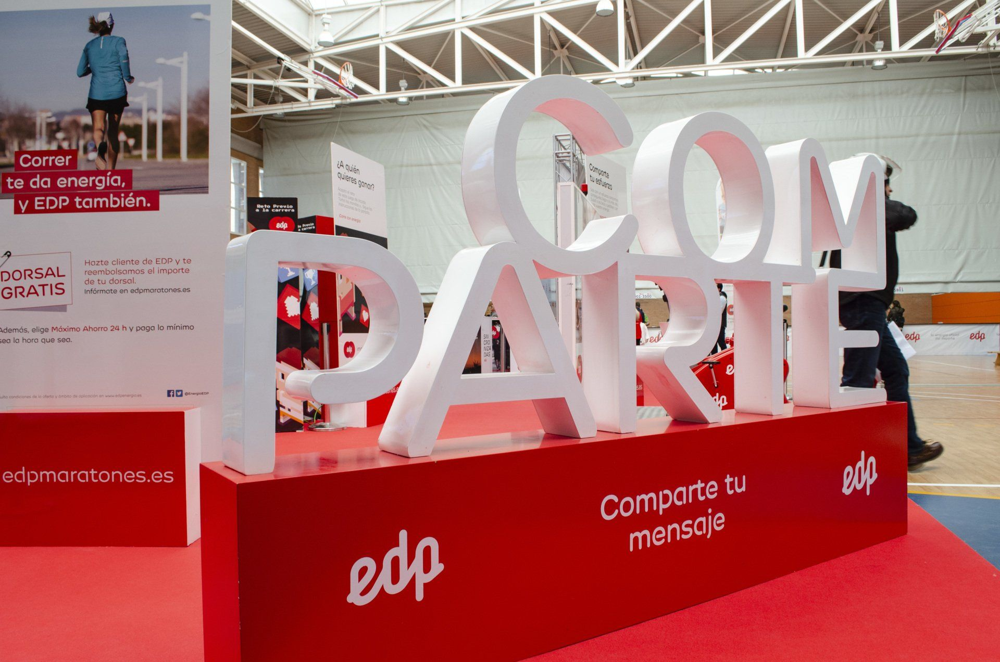
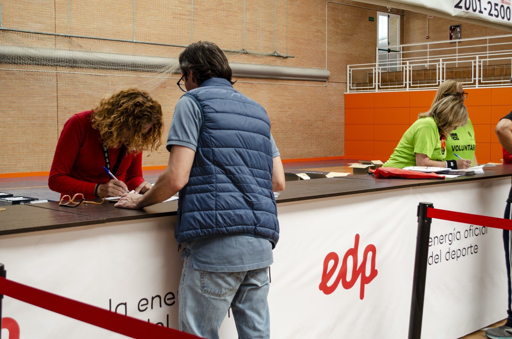
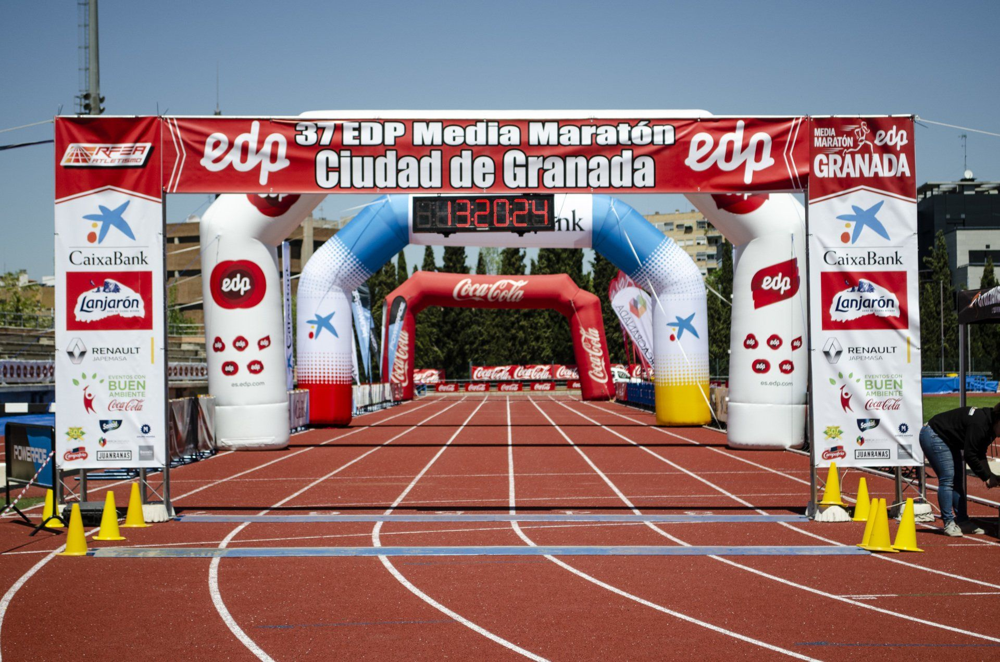
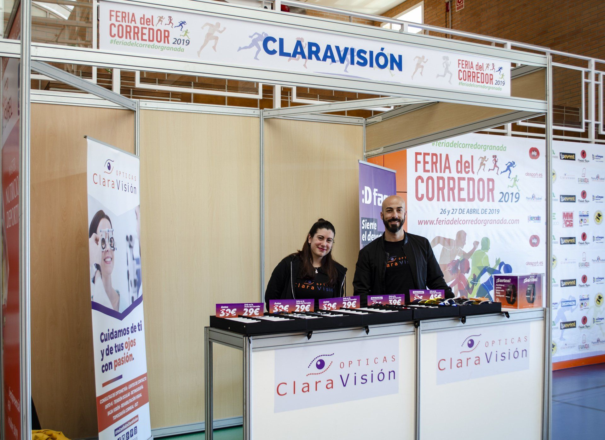
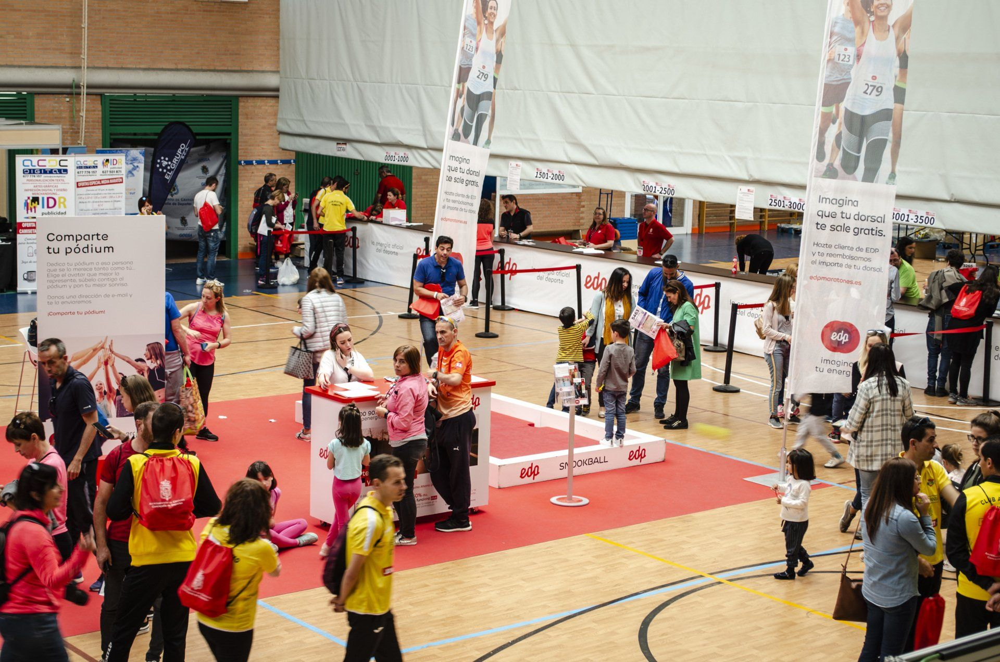

Nuestra propuesta de valor
Stands a partir de 6 m2 con moqueta, mobiliario, impresión digital de frontis, iluminación LED y punto de luz para todos los expositores.
Además, se ubicó en la zona central 100 m2 para EDP, patrocinador oficial de la Media Maratón Ciudad de Granada, con actividades de realidad virtual,
podium con photocall.
Dentro del pabellón también realizamos la recogida de dorsales para la carrera y se instaló un mostrador modular de 24 metros
patrocinado también por EDP.










Más de 4.000 asistentes
La Feria del Corredor de Granada ofrece la oportunidad a todas las empresas de tener contacto con su público objetivo durante los dos días que dura el evento. Todos los corredores de la Media Maratón de Granada tienen como punto de recogida de dorsales el Complejo Deportivo Núñez Blanca, por lo que tienen la oportunidad de disfrutar de las actividades, teaser, ofertas y promociones especiales que ofrecen los expositores.